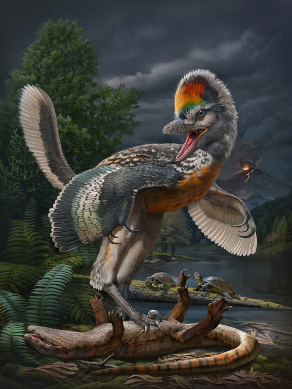
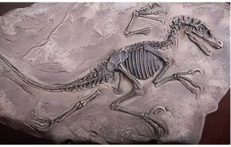
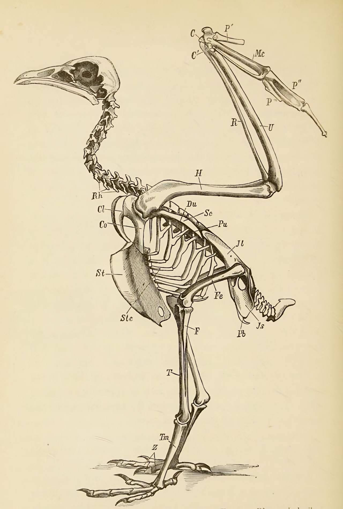

Geçmişin devasa sakinlerinin günümüzle bağlantısını keşfediyoruz. İşte Kuşlar ve Ataları!
Dinozorların günümüzde tamamen yok olduğunu düşünmek büyük bir yanılgıdır. Aslında, dinozorların bazı özellikleri ve genetik mirasları günümüz kuşları aracılığıyla varlığını sürdürmektedir. Kuşlar, bilimsel olarak theropod dinozorlarından, yani Tyrannosaurus-Rex ve Velociraptor gibi etçil dinozorlarla aynı soy hattından gelen canlılardır. Bu evrimsel hikaye, Dünya'nın en büyük yırtıcılarından biri olan dinozorların modern dünyaya nasıl adapte olduğunu anlamamıza yardımcı olur. Şimdi, bu bağlantıyı daha ayrıntılı olarak inceleyelim.
Kuşların, yaklaşık 150 milyon yıl önce Jura Dönemi'nde yaşayan küçük theropod dinozorlarından evrimleştiği düşünülmektedir. Bu fikir, 1861 yılında Almanya'da bulunan Archaeopteryx fosili ile güçlenmiştir. Archaeopteryx, hem dinozorlara hem de modern kuşlara benzeyen özellikler taşıyan bir geçiş formudur. Fosilde, dişli bir çene yapısı, pençeli elleri ve uzun bir kuyruk gibi dinozor özelliklerinin yanı sıra tüyler ve uçma yeteneği gibi kuş özellikleri de dikkat çekmektedir. Bu geçiş formu, bilim insanlarına kuşların evrimsel sürecinin nasıl gerçekleştiğine dair önemli ipuçları sunmaktadır.
Bilim insanları, kuşların evrimsel olarak küçük theropod dinozorlarla başladığını ve zamanla daha hafif bir iskelet yapısına sahip olduklarını öne sürmektedir. Bu süreçte, theropodların bazı türlerinde bulunan tüyler, başlangıçta uçuş amacıyla değil, sıcaklık düzenlemesi ve görsel iletişim için evrimleşmiştir. Zamanla, bu özellikler uçuş yeteneğini geliştirecek şekilde evrimleşerek, modern kuşların sahip olduğu uçma yeteneklerine ve vücut yapılarına yol açmıştır. Bu evrimsel yolculuk, doğada değişen koşullara uyum sağlama ve hayatta kalma mücadelesinin bir sonucudur.
Kuşlarla theropod dinozorlar arasındaki bağlantıyı kanıtlayan en önemli bulgular, fosil kayıtlarında yer almaktadır. Çin'deki Liaoning fosil yataklarında keşfedilen tüy yapısına sahip theropod dinozor fosilleri, bu ilişkiyi net bir şekilde ortaya koymuştur. Microraptor ve Anchiornis gibi türler, hem tüyleri hem de uçma yeteneğiyle kuşların erken akrabaları olarak kabul edilir.
Aşağıdaki iki resimde sırasıyla bir bir tür theropod olan velociraptor fosili ve bir kartalın iskelet yapısı bulunmaktadır. İki hayvanın vücut yapılarının benzerliklerini burada da görebilmekteyiz.
 Modern kuşların özellikleri, theropod dinozorların yapısal ve davranışsal özelliklerini yansıtır. Örneğin:
Theropod dinozorlarda görülen içi boş kemikler, modern kuşların hafif iskelet yapısının bir öncüsüdür. Bu adaptasyon, uçma yeteneğinin daha kolay gelişmesini sağlamıştır.
Dinozorların tüyleri başlangıçta yalnızca bir tür yalıtım mekanizmasıydı. Ancak, modern kuşlarda bu tüyler uçma ve görsel iletişim gibi farklı işlevlere evrimleşmiştir.
Theropodlar, sürü halinde avlanma gibi karmaşık sosyal davranışlara sahipti. Bu tür davranışlar, günümüz kuşlarının sürü davranışları ve sosyal iletişimleriyle benzerlik taşır.
Kuşların davranışlarında, ataları olan dinozorlardan gelen izler bulunmaktadır. Örneğin, günümüz kuşlarının gagalarıyla yiyecekleri parçalama davranışı, theropodların çene yapısıyla avlarını parçalama özelliklerine benzer. Ayrıca, bazı kuş türleri, theropodların avlanma ve savunma davranışlarını andıran hareketler sergiler.
Fosil kayıtları, theropodların yumurtalarını kuluçkaya yatırdığına ve onları koruma altına aldığına işaret eder. Günümüz kuşlarının kuluçka davranışları, bu eski dinozor davranışlarının bir devamı niteliğindedir.
Avcı theropodların, günümüz yırtıcı kuşlarında (kartallar ve şahinler gibi) görülen saldırı taktikleriyle benzerlikler taşıdığı düşünülmektedir. Bu, onların ortak bir avlanma geçmişine sahip olduğunu gösterir.
Kuşların uçma yeteneği, theropod dinozorların evrim sürecindeki en dikkat çekici değişimlerden biridir. Fosil bulgularına göre, theropodların tüyleri başlangıçta uçma amaçlı değildi. Bunun yerine, yalıtım sağlamak, rakiplerine karşı tehdit oluşturmak veya çiftleşme döneminde görsel iletişim için kullanılmış olabileceği düşünülmektedir.
Zamanla, ön ayaklarının uzunluğu ve tüylerin aerodinamik yapısı, uçma yeteneğinin gelişmesini sağladı. Bu evrimsel dönüşüm, özellikle küçük boyutlu theropodlarda hız kazanmıştır. Modern kuşların kanat yapıları ve uçma dinamikleri, bu süreçteki aşamaları yansıtır.
Kuşların evrimi, paleontoloji ve genetik alanlarındaki çalışmalarla giderek daha net bir şekilde aydınlanmaktadır. Fosil kayıtları, kuşların theropod dinozorlardan evrildiğini gösterirken, fosillerde bulunan kolajen proteinleri modern kuşlardaki proteinlerle benzerlik göstermektedir. Bu moleküler bulgular, kuşların dinozorların soyundan geldiğini güçlü bir şekilde destekler. Archaeopteryx gibi geçiş formu fosilleri de bu ilişkiyi morfolojik olarak kanıtlar.
Genetik çalışmalar, kuşların evrimsel kökenini anlamada kritik bir rol oynamaktadır. Kuşların DNA'sı, theropod dinozorların genetik izlerini taşır. Kemik yapısı, tüy gelişimi ve solunum sistemi gibi özellikler, bu ortak mirası ortaya koymaktadır. Dinozorların bazı türlerinde tüy benzeri yapıların bulunması, modern kuş tüylerinin evrimine zemin hazırlamıştır. Moleküler analizler, kuşların uçma kabiliyetinin evrimini de aydınlatmaktadır. Bu kanıtlar, kuşların sadece dinozor soyundan geldiğini değil, evrimsel sürecin genetik ve biyolojik dinamiklerini de gözler önüne serer.
Dinozorların yok olmasının ardından, kuşlar bu soyun hayatta kalan son temsilcileri olarak evrimlerini sürdürmektedir. Bugün Dünya'da yaklaşık 10.000 kuş türü bulunmaktadır ve bu türler, dinozorların adaptasyon yeteneği ve çeşitliliğinin bir kanıtıdır. Uçma kabiliyetlerinden, sosyal davranışlarına ve çevresel uyumlarına kadar birçok özellikleri, onların dinozor kökenlerini yansıtır.
Dinozorların modern dünyadaki bu sessiz varlığı, yalnızca geçmişin büyüleyici hikayesini anlatmakla kalmaz, aynı zamanda yaşamın dayanıklılığı ve evrimsel değişimlerin gücünü de gösterir.
© 2025 Tüm Hakları Saklıdır